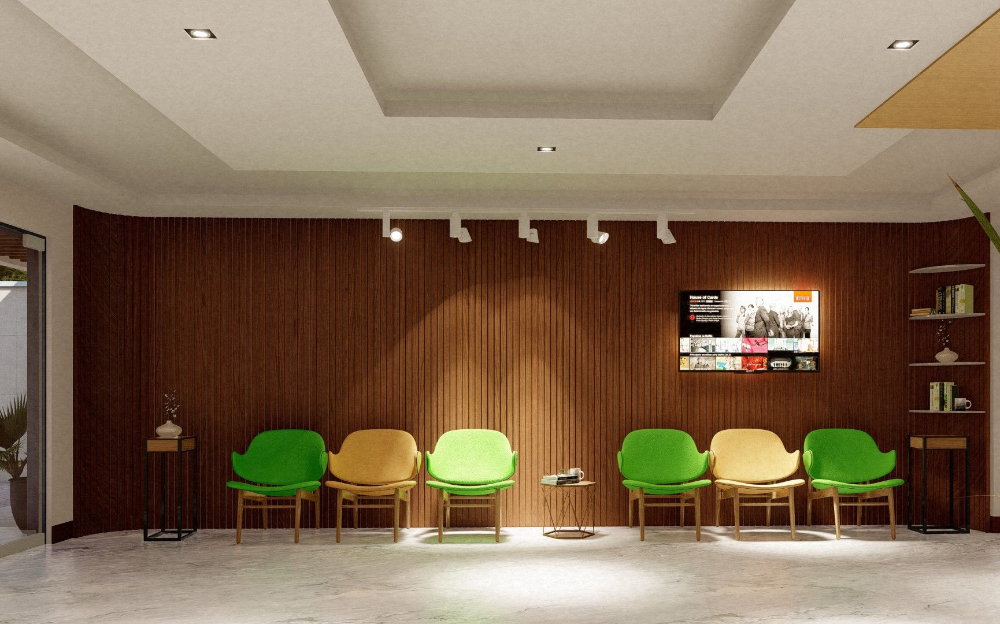
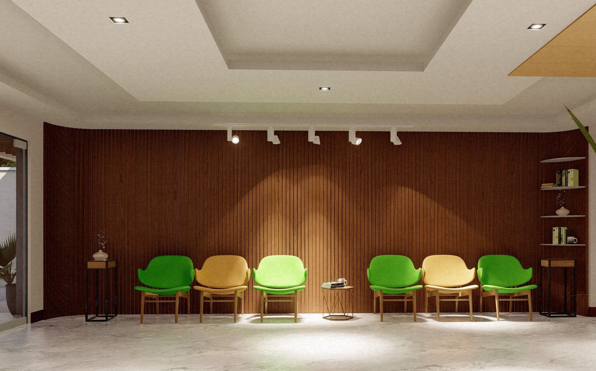
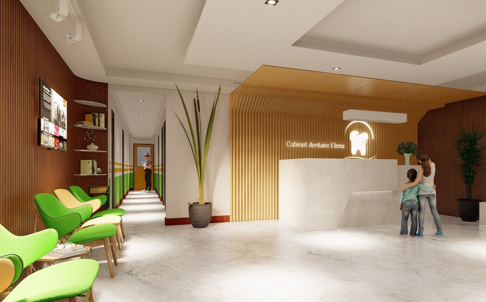
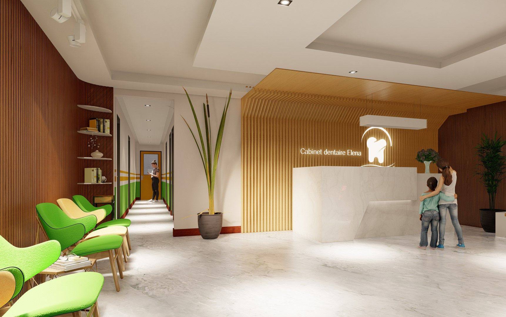

Un Environnement de Soin Apaisant
Le Cabinet Dentaire Elena est un projet d'aménagement d'intérieur médical qui privilégie le confort du patient et l'efficacité ergonomique des praticiens. L'approche conceptuelle repose sur l'utilisation de tons neutres, de matériaux chaleureux comme le bois, et d'un éclairage doux pour réduire l'anxiété liée aux soins dentaires.
La gestion de l'espace a été optimisée pour garantir une circulation fluide entre l'accueil, les salles d'attente et les salles de soins, tout en respectant les normes d'hygiène et de sécurité les plus strictes. Chaque détail, du mobilier sur mesure à la signalétique, a été pensé pour créer une expérience patient premium et sereine.



